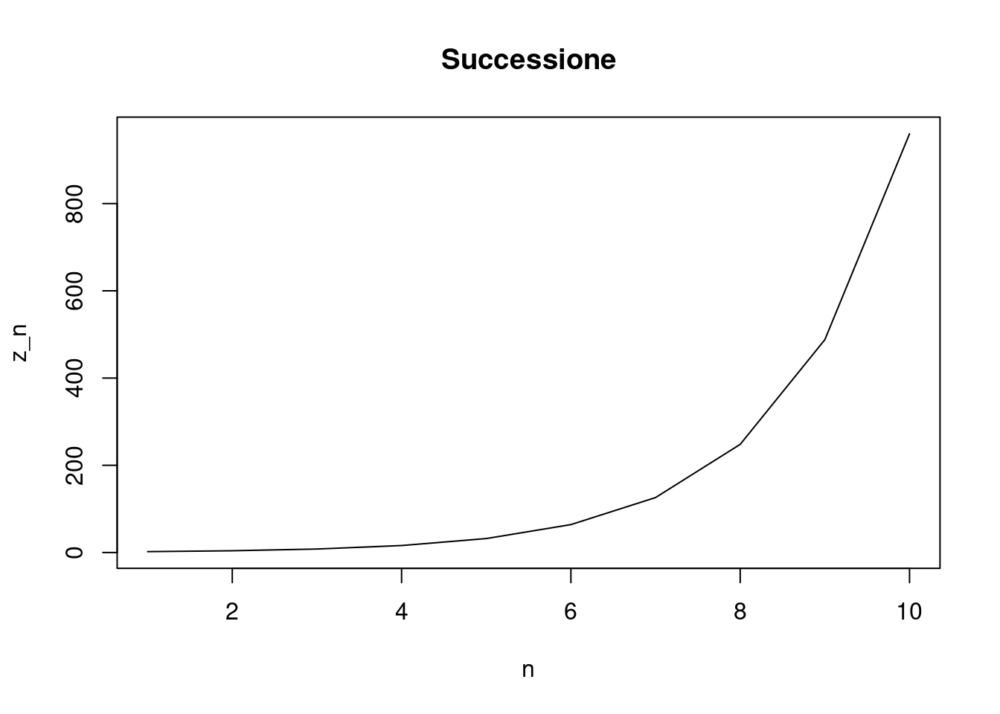
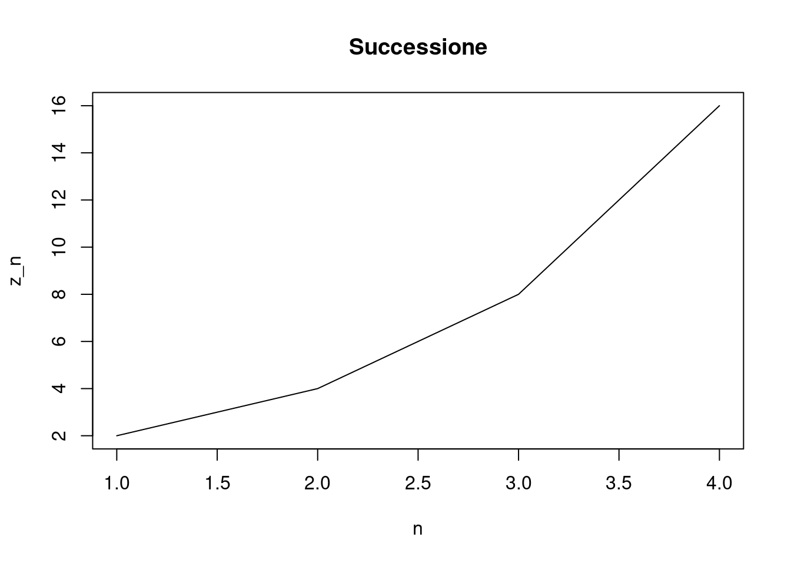

Non me me vogliate. Ma sono un figlio del nostro modo di insegnare la matematica. Nelle scuole superiori, e nelle università.
La matematica si insegna male
Si! Perchè la matematica si insegna nella maggior parte dei casi in maniera meccanica. E soprattutto si insegnano cose che potevano andare bene prima del 1600. Concludo questa piccola premessa dicendo che, alle superiori ho fatto il perito agrario, e la matematica che mi è rimasta, era incentrata sulle applicazioni alla topografia, quindi seni, coseni per permettere di fare tringolazioni e messe in mappa. Altre cose imparate una striminzita formula per il tasso di sconto, da usare nelle stime.
Ma alla fine delle superiori data la mia passione per le scienze, mi sono iscritto a fisica. Ma anche all’università, i professori esponevano sempre più velocemente le cose in maniera meccanica. Ed io ero senza una preparazione adeguata.
Alla fine del primo anno capii che non riuscivo ad andare avanti. Mi dedicai al cinema vista che era la mia latra passione che coltivavo da quando avevo 14 anni e stampavo le foto in camera oscura. Ho frequentato e diplomato il “Centro Sperimentale di Cinematografia” nella sezione di cinema documentario.
Tutte queste parole per dire una sola cosa che inizio a comprendere solo adesso, non solo io ero e resto un grande ingorante in matematica, ma sia il metodo di insegnamento alle superiori, sia all’università, sono aridi, cioè non fanno percepire la reale potenza della matematica. Ma mirano a creare delle persone che possono essere al più dei meri calcolatori. In un mondo dove le macchine sono più brave a fare i calcoli, non è più ammissibile.
La luna
Una sera dopo una giornata faticosa, sono uscito in giardino,ed ho visto la luna piena, e mi sono detto adesso gli faccio delle foto. Ho preso la macchinetta fotografica il cavalletto ed ho iniziato a scattare le foto. Naturalmente dopo pochi minuti la luna scappava dall’inquadratura per effetto della rotazione terrestre.
Poi dopo un po’ mi sono chiesto: E se io potessi aumentare la risoluzione, interpolando una serie di foto del cielo mentre si muove? Così ho fotografato il cielo, facendo delle foto nel più breve tempo possibile dalla macchinetta fotografica.
Quindi ho preso carta e matita ed ho disegnato uno schema del cielo l’obbiettivo della macchina fotografica ed il sensore, cercando di visualizzare la relazione tra di loro.
Poi ho iniziato a pensare come fare ad aumentare la risoluzione ed allora mi sono immaginate le stelle come dei numeri più o meno grandi. E mi sono detto il mio sensore mi da dei numeri interi più o meno grandi per ogni pixel , quindi ho fatto una griglia dove mettevo i valori dei pixel, ma poi ho detto, facciamo le cose più semplici facciamo una riga per volta. E poi mi sono detto facciamo finta che io so quale è il valore del cielo a più alta risoluzione. Il valore del cielo che leggo con il sensore non è altro che lo somma in un dato intorno. Ed ipotizziamo che il cielo non cambi tra uno scatto e l’altro. Allora ho scritto due sequenze di numeri. La prima lista era la lista del valore di luminosità delle stelle ad alta risoluzione, ipotizzando che tra una foto e l’altra il cielo si sposti di un \(1/k\) di pixel, ne ho fatto la somma ogni \(k\), e visto che la macchina foto grafica non mi avrebbe dato valori infiniti ma numeri interi con un valore massimo finito. Ho limitato i miei numeri da 0 fino a 9. Bene! Ho preso carta e matita e mi sono messo a fare i conti. E poi ho preso Un foglio elettronico
Cielo A
\((1,3,4,5,1,0,2,3,6,4,7,5,7,0,,,)\)
Sensore B
\((,,,13,13,10,8,6,11,15,20,22,23,19,12,7,0)\)
In pratica ho due insiemi \(A\) e \(B\) dove ogni termine di \(B\) è dato dalla somma dei \(k\) termini di \(A\) ad esempio con \(K=4\)
Da come abbiamo definito \(A\) e \(B\) possiamo calcolare “quasi” ogni punto di \(B\) è uguale alla sommatoria di \(k\) punti precedenti ad \(A\)
Facendo queste considerazioni abbiamo anche detto che ad ogni passo \(t\) ci spostiamo di \(1\)
E guardando meglio ci accorgiamo che non è tanto importante tutta sommatoria ma il primo e l’ultimo termine della sommatoria. E che la sommatoria potrebbe essere fatta \(k = 1000\) oppure \(k = 50\) oppure \(k =3\) e sarebbero importanti solo i termini \(a_k\) e \(a_0\)
\[ B = \int A\]\[A = \Delta B \]
Ora
\[z_{m+1} = (\sum_{i=0}^{m} z_i )- z_0 \]
Certamente! In questo caso, possiamo definire la sequenza in modo ricorsivo, dove il valore al tempo \(t_i\) è dato dalla somma degli elementi della sequenza al tempo \(t_{i-1}\) tranne il primo elemento. Possiamo rappresentare questa idea con la seguente equazione:
\[a_{i} = \sum_{j=2}^{n} a_{i-1,j-1}\]
dove \(a_{i,j}\) rappresenta l’\(j\)-esimo elemento della sequenza al tempo \(t_i\).
Iniziamo quindi definendo la sequenza iniziale \(a_1\) come:
# Definizione della sequenza inizialez <-c(3,6,7,9,2)# Numero di elementi nella sequenza inizialen <-length(z)# Numero di elementi da generarem <-10# Creazione di un nuovo vettore che esclude il primo elemento della sequenza originalez_new <- z[-1]# Generazione dei m elementi successivi utilizzando l'equazione fornitafor (i in1:m) { z_new[i] <-sum(z_new[(i-1):max(i-n,0)]) + z[n]}# Stampa della sequenza generatacat("Sequenza generata:\n")
Sequenza generata:
cat(z_new, "\n")
2 4 8 16 32 64 126 248 488 960
# Creazione del grafico della sequenza generataplot(z_new, type ="l", xlab ="n", ylab ="z_n", main ="Successione")

Per calcolare la derivata numerica di una serie, possiamo utilizzare la formula di differenza finita:
\[f'(x_i) = \frac{f(x_{i+1}) - f(x_i)}{h}\]
dove \(h\) rappresenta l’intervallo tra due punti successivi della serie.
In questo caso, dato che abbiamo a disposizione solo la serie, possiamo approssimare \(h\) con la differenza tra due punti successivi. Quindi, la formula diventa:
# Definiamo la serieserie <-c(2, 4, 8, 16, 32)# Inizializziamo il vettore delle derivatederivate <-numeric(length(serie)-1)# Calcoliamo le derivatefor (i in1:(length(serie)-1)) { derivate[i] <- (serie[i+1] - serie[i])/(i+1- i)}# Stampiamo le derivatecat("Derivate calcolate:")
Derivate calcolate:
cat(derivate, "\n")
2 4 8 16
# Creazione del grafico della sequenza generataplot(derivate, type ="l", xlab ="n", ylab ="z_n", main ="Successione")

In questo esempio, abbiamo definito la serie serie e abbiamo inizializzato il vettore delle derivate derivate con la funzione numeric. Successivamente, abbiamo calcolato le derivate numeriche con un ciclo for che attraversa tutti gli elementi della serie (tranne l’ultimo) e applica la formula di differenza finita. Infine, abbiamo stampato le derivate con la funzione cat.